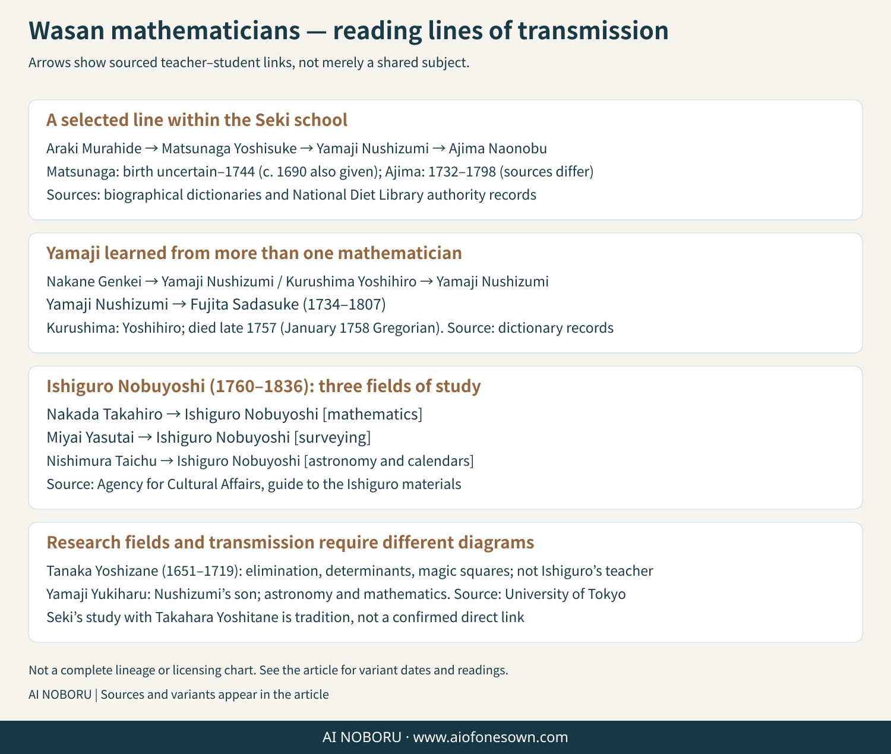

About Wasan / People
Take up a question, then pass it on.
PBooks, procedures, teaching, and records moved mathematics from one generation to the next. These selected profiles focus on what each person did, while keeping direct teacher–student relationships separate from broader lines of influence.

Opening arithmetic to a wider public
Yoshida Mitsuyoshi 1598–1672
Author of Jinkōki. By bringing abacus instruction together with practical and recreational problems, he widened the entry point to arithmetic. The book’s unanswered challenge problems also encouraged later authors to respond with solutions and new problems.
The National Diet Library authority record gives 1672 as his year of death, while an NDL exhibition page gives 1673; the site does not conceal that source difference.
Extending symbolic and elimination methods
Seki Takakazu birth year uncertain–1708
Seki developed written methods for handling numbers and symbols and advanced techniques for eliminating unknowns. He also left important work on circle calculation and finite power sums. Because his birth year remains disputed, this page does not present a single conjectural year as settled fact.
Finding methods from numerical patterns
Takebe Katahiro 1664–1739
A student of Seki who explained and carried forward Seki’s work while developing his own investigations of π, arcs, and numerical procedures. Tetsujutsu Sankei is also important for the way it reflects on how mathematical questions are investigated.
Building a system together
Takebe Kataakira 1661–1716
Katahiro’s elder brother and a participant, with Seki and Katahiro, in the compilation of Taisei Sankei. Keeping the brothers distinct prevents a collaborative body of work from being collapsed into a single biography.
Carrying circle theory into the next generation
Matsunaga Yoshisuke birth year uncertain–1744
An important mathematician of the generation after Seki, especially for later developments in circle theory and series. Reference works do not agree on his birth year: one major Japanese encyclopedia gives around 1690, while a 2022 peer-reviewed study uses 1694?. This site therefore leaves the birth year unsettled rather than forcing one value.
Deepening tangency and mensuration
Ajima Naonobu 1732–1798
A major late-Edo mathematician whose work includes circle theory, tangency, and mensuration. The circle configurations associated with Ajima and Irisawa’s later six-sphere-chain problem are treated here as distinct pieces of research.
Pushing later circle theory further
Wada Yasushi 1787–1840
Wada developed later techniques of enri (circle theory) and strongly influenced subsequent practitioners. English-language histories often render his name as Wada Nei; the Japanese reading used on this site is Yasushi. Circle theory was not one completed formula from Seki’s lifetime, but a research area developed across generations.
Asking how a chain of spheres closes
Irisawa Shintarō Hiroatsu documented by his 1822 sangaku
Known for the six-sphere-chain problem dedicated at Samukawa Shrine in 1822. The key issue is not only that the sphere sizes repeat, but that the spatial chain closes. Rather than inventing uncertain birth and death dates, this page starts from the work that can be documented.
Preserving records into the modern period
Uchida Itsumi 1805–1882
Editor of Kokon Sankan, which preserves material from sangaku that no longer survive. Bibliographic records also use the name Uchida Yatarō Kyō. His work connected late-Edo mathematical practice with the preservation and study of earlier records.
What does a lineage line mean?
A direct teacher–student relationship, a licensed school lineage, and a later research connection are different historical claims. The diagram therefore shows only selected documented relationships and should not be read as a single, complete genealogy of wasan.
Working on the same subject does not by itself establish direct instruction. A person could also learn mathematics, surveying, and calendrical science from different teachers. Read each arrow together with the sources and the accompanying biographical notes.
Names and dates: premodern names can have variant characters and readings, and dates can differ between era dates, Gregorian conversions, and later reference works. Where the evidence is genuinely unsettled, the uncertainty remains visible.
Additional documented names, dates, and relationships
The following notes mirror the documentary cautions in the Japanese edition. They add people needed to read the cited lineages and corrections without turning the list into a complete genealogy.
| Person | What this site states | Source |
|---|---|---|
| Kurushima Yoshihiro | Birth year uncertain (some references give around 1690). His death date is Hōreki 7, month 11, day 29; depending on calendar conversion this appears as 1757 or 1758. | Kotobank ↗ |
| Tanaka Yoshizane | 1651–1719. A Kyoto mathematician who worked on elimination, determinants, and magic squares. He lived too early to have been Ishiguro Nobuyoshi’s direct teacher. | Kotobank ↗ |
| Yamaji Nushizumi | 1704–1772/1773 depending on calendar conversion. He studied with Nakane Genkei, Kurushima Yoshihiro, and Matsunaga Yoshisuke, and taught figures including Ajima Naonobu and Fujita Sadasuke. | Kotobank ↗ |
| Yamaji Koreaki | Son of Yamaji Nushizumi and a mathematician connected with calendrical work; the University of Tokyo collection provides a documentary entry point. | University of Tokyo ↗ |
| Nakata Takahiro | 1739–1802. Studied with Fujita Sadasuke, spread mathematics in Toyama, and taught Ishiguro Nobuyoshi. Reference works vary between Nakada and Nakata romanization. | Kotobank ↗ |
| Ishiguro Nobuyoshi | 1760–1836. Studied mathematics with Nakata Takahiro, surveying with Miyai Yasuyasu, and astronomy/calendrics with Nishimura Taichū. | Agency for Cultural Affairs ↗ |
| Fujita Sadasuke | 1734–1807. A student of Yamaji Nushizumi; variant characters for his given name occur in sources. | National Diet Library authority record ↗ |
| Sugano Mototake | Birth and death years are not fixed here. A 1798 correction concerning alternating products is discussed in Takenouchi’s study. | Takenouchi (2010) ↗ |
| Iseki Tomotoki | Birth and death years are not fixed here. His 1690 Sanpō Hakki is relevant to the history of elimination and determinant-like methods. | Goto & Komatsu (2004) ↗ |
| Takahara Yoshitane | A documented figure in reference works. The tradition that he taught Seki is treated as a tradition, not drawn as a secure teacher–student line. | Kotobank ↗ |